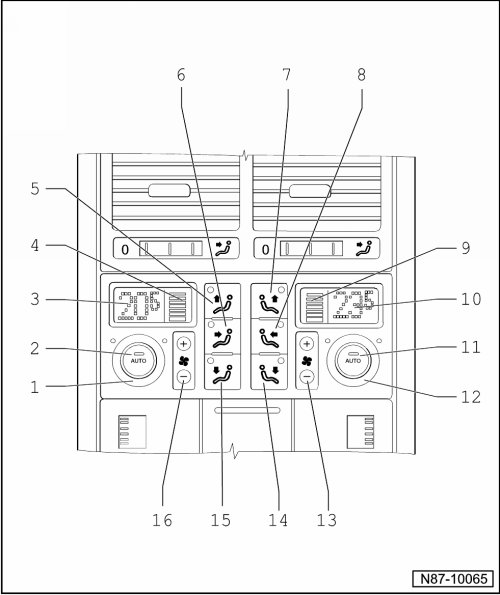

Function of 4 Zone Rear A/C Display Control Head, Climatronic
Function of 4 Zone Rear A/C Display Control Head, Climatronic

1 Temperature regulator, left
• Change rear left temperature setting by turning.
2 AUTO button, left
• In automatic mode the Climatronic maintains the selected rear left interior temperature automatically. With this setting the vent air temperature, the blower speed and the air distribution are controlled automatically.
3 Display for selected interior temperature, left
• Can be changed from degrees Celsius to degrees Fahrenheit and vice versa --> [ Convert degrees Celsius to Fahrenheit in vehicles
with menu control elements in windshield washer lever. ] 4 Zone A/C Display Control Head with Climatronic Control Module
4 Display for blower speed, left
• In automatic operation the actual blower speed is displayed.
5 Button - side window air distribution, left
6 Button - Rear and side window air distribution, left
7 Button - side window air distribution, right
8 Button - Rear and side window air distribution, right
9 Display for blower speed, right
• In automatic operation the actual blower speed is displayed.
10 Display for selected interior temperature, right
• Can be changed from degrees Celsius to degrees Fahrenheit and vice versa --> [ Convert degrees Celsius to Fahrenheit in vehicles
with menu control elements in windshield washer lever. ] 4 Zone A/C Display Control Head with Climatronic Control Module
11 AUTO button, right
• In automatic mode the Climatronic maintains the selected rear right interior temperature automatically. With this setting the vent air temperature, the blower speed and the air distribution are controlled automatically.
12 Temperature regulator, right
• Change rear right temperature setting by turning.
13 Button for setting blower speed, right
14 Button - footwell air distribution, right
15 Button - footwell air distribution, left
16 Button for setting blower speed, left